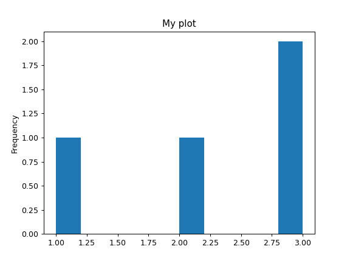
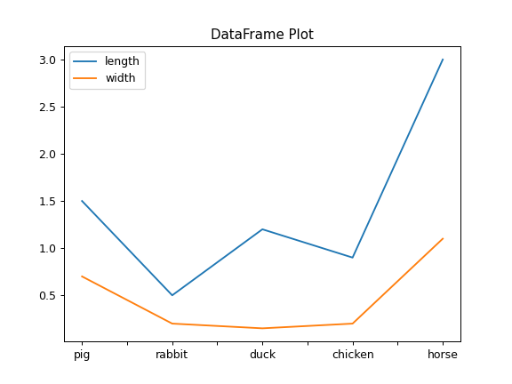
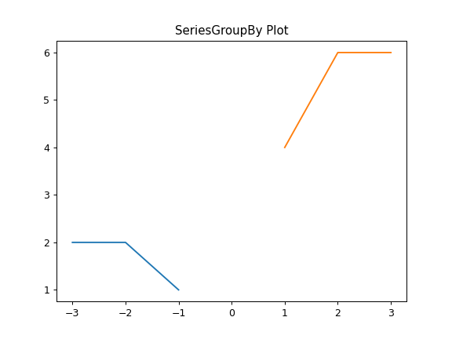
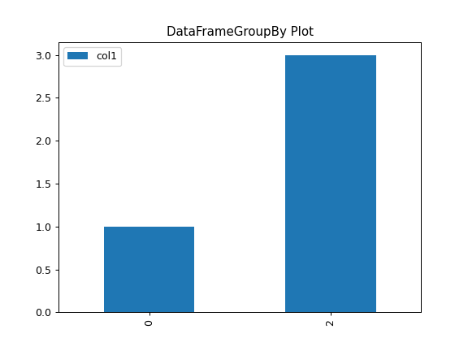
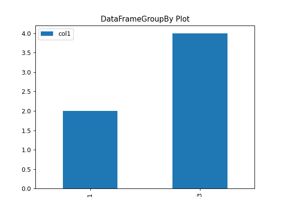

pandas.DataFrame.plot#
- DataFrame.plot(*args, **kwargs)[source]#
Make plots of Series or DataFrame.
Uses the backend specified by the option
plotting.backend. By default, matplotlib is used.- Parameters:
- dataSeries or DataFrame
The object for which the method is called.
Attributes
x
(label or position, default None) Only used if data is a DataFrame.
y
(label, position or list of label, positions, default None) Allows plotting of one column versus another. Only used if data is a DataFrame.
kind
(str) The kind of plot to produce: - ‘line’ : line plot (default) - ‘bar’ : vertical bar plot - ‘barh’ : horizontal bar plot - ‘hist’ : histogram - ‘box’ : boxplot - ‘kde’ : Kernel Density Estimation plot - ‘density’ : same as ‘kde’ - ‘area’ : area plot - ‘pie’ : pie plot - ‘scatter’ : scatter plot (DataFrame only) - ‘hexbin’ : hexbin plot (DataFrame only)
ax
(matplotlib axes object, default None) An axes of the current figure.
subplots
(bool or sequence of iterables, default False) Whether to group columns into subplots: -
False: No subplots will be used -True: Make separate subplots for each column. - sequence of iterables of column labels: Create a subplot for each group of columns. For example [(‘a’, ‘c’), (‘b’, ‘d’)] will create 2 subplots: one with columns ‘a’ and ‘c’, and one with columns ‘b’ and ‘d’. Remaining columns that aren’t specified will be plotted in additional subplots (one per column).sharex
(bool, default True if ax is None else False) In case
subplots=True, share x axis and set some x axis labels to invisible; defaults to True if ax is None otherwise False if an ax is passed in; Be aware, that passing in both an ax andsharex=Truewill alter all x axis labels for all axis in a figure.sharey
(bool, default False) In case
subplots=True, share y axis and set some y axis labels to invisible.layout
(tuple, optional) (rows, columns) for the layout of subplots.
figsize
(a tuple (width, height) in inches) Size of a figure object.
use_index
(bool, default True) Use index as ticks for x axis.
title
(str or list) Title to use for the plot. If a string is passed, print the string at the top of the figure. If a list is passed and subplots is True, print each item in the list above the corresponding subplot.
grid
(bool, default None (matlab style default)) Axis grid lines.
legend
(bool or {‘reverse’}) Place legend on axis subplots.
style
(list or dict) The matplotlib line style per column.
logx
(bool or ‘sym’, default False) Use log scaling or symlog scaling on x axis.
logy
(bool or ‘sym’ default False) Use log scaling or symlog scaling on y axis.
loglog
(bool or ‘sym’, default False) Use log scaling or symlog scaling on both x and y axes.
xticks
(sequence) Values to use for the xticks.
yticks
(sequence) Values to use for the yticks.
xlim
(2-tuple/list) Set the x limits of the current axes.
ylim
(2-tuple/list) Set the y limits of the current axes.
xlabel
(label, optional) Name to use for the xlabel on x-axis. Default uses index name as xlabel, or the x-column name for planar plots. .. versionchanged:: 2.0.0 Now applicable to histograms.
ylabel
(label, optional) Name to use for the ylabel on y-axis. Default will show no ylabel, or the y-column name for planar plots. .. versionchanged:: 2.0.0 Now applicable to histograms.
rot
(float, default None) Rotation for ticks (xticks for vertical, yticks for horizontal plots).
fontsize
(float, default None) Font size for xticks and yticks.
colormap
(str or matplotlib colormap object, default None) Colormap to select colors from. If string, load colormap with that name from matplotlib.
colorbar
(bool, optional) If True, plot colorbar (only relevant for ‘scatter’ and ‘hexbin’ plots).
position
(float) Specify relative alignments for bar plot layout. From 0 (left/bottom-end) to 1 (right/top-end). Default is 0.5 (center).
table
(bool, Series or DataFrame, default False) If True, draw a table using the data in the DataFrame and the data will be transposed to meet matplotlib’s default layout. If a Series or DataFrame is passed, use passed data to draw a table.
yerr
(DataFrame, Series, array-like, dict and str) See Plotting with Error Bars for detail.
xerr
(DataFrame, Series, array-like, dict and str) Equivalent to yerr.
stacked
(bool, default False in line and bar plots, and True in area plot) If True, create stacked plot.
secondary_y
(bool or sequence, default False) Whether to plot on the secondary y-axis if a list/tuple, which columns to plot on secondary y-axis.
mark_right
(bool, default True) When using a secondary_y axis, automatically mark the column labels with “(right)” in the legend.
include_bool
(bool, default is False) If True, boolean values can be plotted.
backend
(str, default None) Backend to use instead of the backend specified in the option
plotting.backend. For instance, ‘matplotlib’. Alternatively, to specify theplotting.backendfor the whole session, setpd.options.plotting.backend.**kwargs
Options to pass to matplotlib plotting method.
- Returns:
matplotlib.axes.Axesor numpy.ndarray of themIf the backend is not the default matplotlib one, the return value will be the object returned by the backend.
See also
matplotlib.pyplot.plotPlot y versus x as lines and/or markers.
DataFrame.histMake a histogram.
DataFrame.boxplotMake a box plot.
DataFrame.plot.scatterMake a scatter plot with varying marker point size and color.
DataFrame.plot.hexbinMake a hexagonal binning plot of two variables.
DataFrame.plot.kdeMake Kernel Density Estimate plot using Gaussian kernels.
DataFrame.plot.areaMake a stacked area plot.
DataFrame.plot.barMake a bar plot.
DataFrame.plot.barhMake a horizontal bar plot.
Notes
See matplotlib documentation online for more on this subject
If kind = ‘bar’ or ‘barh’, you can specify relative alignments for bar plot layout by position keyword. From 0 (left/bottom-end) to 1 (right/top-end). Default is 0.5 (center)
Examples
For Series:
>>> ser = pd.Series([1, 2, 3, 3]) >>> plot = ser.plot(kind="hist", title="My plot")

For DataFrame:
>>> df = pd.DataFrame( ... { ... "length": [1.5, 0.5, 1.2, 0.9, 3], ... "width": [0.7, 0.2, 0.15, 0.2, 1.1], ... }, ... index=["pig", "rabbit", "duck", "chicken", "horse"], ... ) >>> plot = df.plot(title="DataFrame Plot")

For SeriesGroupBy:
>>> lst = [-1, -2, -3, 1, 2, 3] >>> ser = pd.Series([1, 2, 2, 4, 6, 6], index=lst) >>> plot = ser.groupby(lambda x: x > 0).plot(title="SeriesGroupBy Plot")

For DataFrameGroupBy:
>>> df = pd.DataFrame({"col1": [1, 2, 3, 4], "col2": ["A", "B", "A", "B"]}) >>> plot = df.groupby("col2").plot(kind="bar", title="DataFrameGroupBy Plot")

